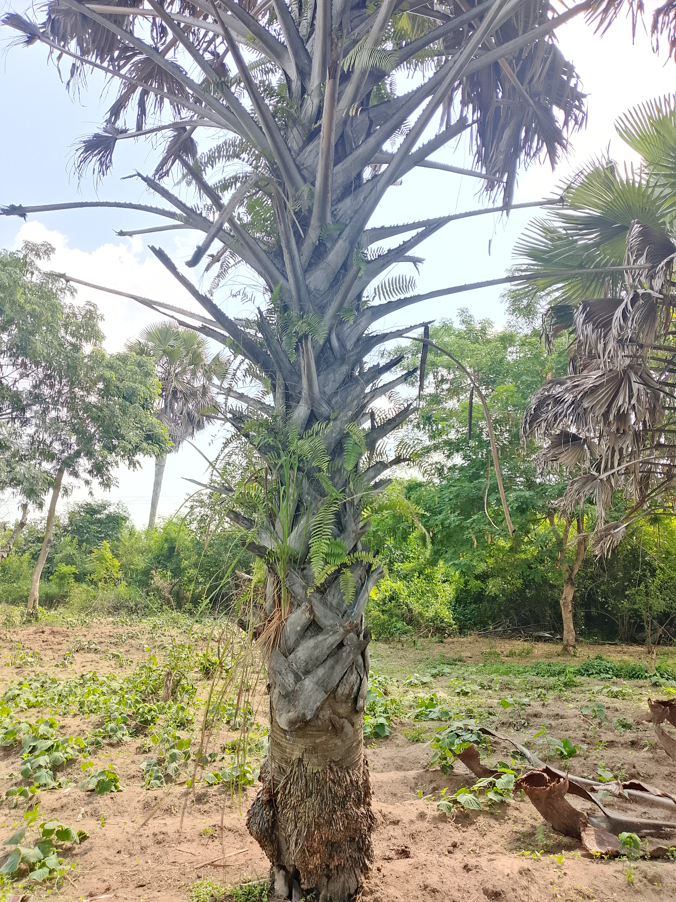

Conifères
« Avec le pollen et la graine, les végétaux se sont affranchis de l’eau pour se reproduire et ont conquis les milieux les plus rudes. » 🌲
L'arrivée des conifères (gymnospermes) marque l'apparition des plantes à graines : ce sont de grands arbres, souvent persistants, dont les organes reproducteurs sont regroupés dans des cônes et dont les ovules ne sont pas enfermés dans un ovaire.

Le problème résolu : la dépendance à l'eau pour la reproduction
Chez les mousses et les fougères, les gamètes mâles nagent dans l'eau pour atteindre le gamète femelle, ce qui limite ces plantes aux milieux humides. Les conifères ont résolu ce problème grâce au grain de pollen, transporté par le vent, et au tube pollinique, qui amène les gamètes mâles jusqu'à l'oosphère sans qu'ils aient besoin de nager. Le gamétophyte femelle reste protégé dans l'ovule, qui devient une graine : elle contient l'embryon et des réserves, entourés d'un tégument résistant. Le bois et les aiguilles à cuticule épaisse leur permettent enfin de devenir de grands arbres et de résister au froid et à la sécheresse.
Coordonnées GPS
| Latitude | Longitude | Précision (m) | Milieu |
|---|---|---|---|
| 6.8966 | -5.2253 | 1.541 | sec |